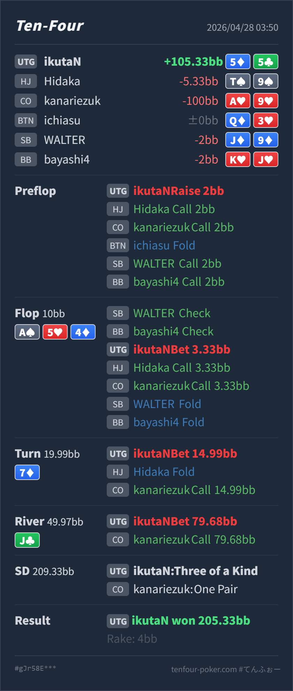

Preflop
良い5♦5♣ は open 可能な pocket pair で、multiway でも set を作れば大きく取れます。
GTO基準で大きくズレているのは Hero 側ではなく、むしろ Villain 側の A♥9♥ での call down の広さです。Hero の 5♦5♣ は preflop open から、flop set、turn 大きめ value まではかなり自然です。見直すなら river J♣ で 79.68BB を 49.97BB に overbet all-in した点で、これは「set だから常に最大を打つ」ではなく、「相手が Ax をかなり降りない pool なら強い exploit」という位置づけです。
5♦5♣A♥9♥A♠ 5♥ 4♦ / 7♦ / J♣5♦5♣ の open は自然です。2BB open で後ろから複数 call されても、set value があり、preflop の大きな問題ではありません。A♠ 5♥ 4♦ は 5way ですが、Hero は bottom set でかなり強い value hand です。3.33BB into 10BB の small c-bet は、Ax、pair、straight draw を広く残せるので良いです。7♦ は diamond draw と一部 straight が増えるため、Hero は protection も兼ねて大きく打てます。14.99BB into 19.99BB は良い value size です。J♣ は flush は完成せず、多くの draw は外れています。ただし CO の flop call / turn call range には、強い Ax、two pair、set、まれな straight も残るため、bottom set の巨大 overbet は標準より exploit 寄りです。5♦5♣A♥9♥2BB, HJ call, CO call, BTN fold, SB call, BB callA♠ 5♥ 4♦ / 7♦ / J♣3.33BB, HJ call, CO call, SB fold, BB fold14.99BB, HJ fold, CO call79.68BB, CO call
良い5♦5♣ は open 可能な pocket pair で、multiway でも set を作れば大きく取れます。
A♠ 5♥ 4♦良い
Hero は bottom set で、現時点ではかなり強い value hand です。
7♦良い
Hero は引き続き強い set ですが、slowplay するより value/protection を取りたい hand です。
J♣exploit 寄りで良い
Hero の bottom set は強い value hand ですが、巨大 overbet では非ナッツ寄りの value になります。
| 論点 | その場で起きがちな見え方 | どこがズレやすいか | 次回の基準 |
|---|---|---|---|
| multiway の set value | set ができたので、とにかく最後まで大きく取り切れそうに見える | flop/turn は強く value を取れますが、river では相手の call/call range もかなり濃くなっています。set の絶対値だけでなく、どの worse hand が巨大 bet に call するかを見る必要があります。 | flop/turn は value/protection を優先し、river は「worse の call 密度」で size を決める |
| river overbet all-in | 相手に Ax が多いので、最大を打てば最大 value に見える | 相手が普通に降りられるなら、A9/AQ/AT などは大きすぎる bet に対して fold 寄りになり、call される範囲が two pair+ に寄ります。今回のように top pair が call する pool なら overbet は一気に利益的になります。 | default は medium から pot size 寄り、相手が Ax を降りないなら overbet all-in を増やす |
| ストリート | その時点の見え方 | 実ハンドの位置づけ | 評価 | その場の一手 |
|---|---|---|---|---|
| Preflop | UTG open に対して後ろが広く call し、5way になっています。UTG 側は本来強い range ですが、multiway では単発の c-bet 成功率は下がります。 | 5♦5♣ は open 可能な pocket pair で、multiway でも set を作れば大きく取れます。 | 良い | 2BB open は問題ありません。call が多い pool では、postflop で hit したときに value を取り切る意識が重要です。 |
Flop A♠ 5♥ 4♦ | A-high で UTG range に強い Ax がありつつ、5way なので相手側にも Ax、set、straight draw が残ります。 | Hero は bottom set で、現時点ではかなり強い value hand です。 | 良い | small c-bet は自然です。multiway で pot を膨らませつつ、弱い Ax や draw を残せます。 |
Turn 7♦ | 6x3x、8x6x、diamond draw が増え、flop call した range は少し濃くなります。HJ と CO が残っているため、完全に安全な turn ではありません。 | Hero は引き続き強い set ですが、slowplay するより value/protection を取りたい hand です。 | 良い | 14.99BB の大きめ bet は良いです。Ax、two pair、draw に対して価格をつけられます。 |
River J♣ | flush は外れ、straight も一部だけです。CO の range は Ax、two pair、set、missed draw が中心で、call できる worse がどれだけ残るかが size 選択の焦点です。 | Hero の bottom set は強い value hand ですが、巨大 overbet では非ナッツ寄りの value になります。 | exploit 寄りで良い | default は少し小さめでも十分 value があります。相手が Ax を降りない前提なら、今回の all-in はかなり利益的です。 |
A9s top pair で overbet all-in まで call しているため、Hero の river shove は exploit としてかなり良い結果になっています。A♥9♥ は UTG open に対する preflop call から river call まで、全体にかなり広いです。このタイプが多いなら、Hero は強い value hand で size を大きくしてよいです。Ax をきちんと fold できる相手には、bottom set の overbet all-in は call されたときの相手 range が強くなりすぎます。その場合は 1/2 pot から pot 前後の value bet に寄せる方が安定します。